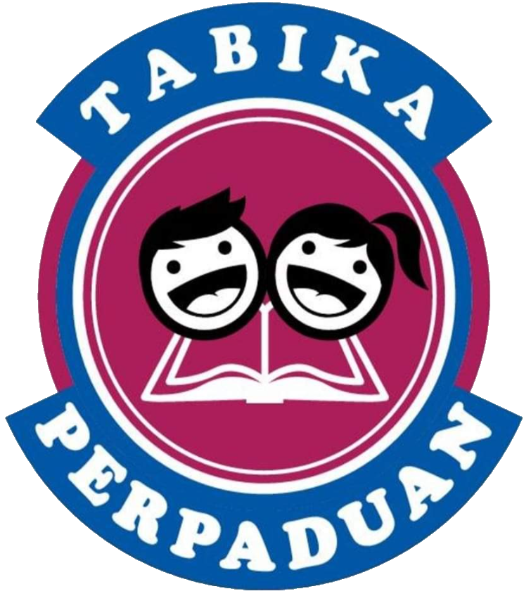

“Learning starts with failure, the first failure is the beginning of education.”
PRA SCHOOL

Tabika Kemas Penjara Penor
PRIMARY SCHOOL
Sekolah Kebangsaan Machang (1)
SECONDARY SCHOOL
Sekolah Menengah Kebangsaan Zainab 1
UNIVERSITY
University Technology Mara Cawangan Kelantan (UITM Machang)
Experiences
I was very excited when I got an offer to study in the Information Management faculty, this is because I want to study in more depth about this course. The process of gathering, storing, managing, and keeping the information in all its forms is covered in the information management (IM) course. Throughout the information life cycle, information management is a broad phrase that encompasses rules and processes for centrally controlling and distributing information among many individuals, organisations, and/or information systems. This curriculum is designed to meet the demands of information and knowledge workers who are critical to the information industry's success. My university experiences have been incredible. I've learnt and experienced so much in such a little amount of time, and it's all gone by so quickly. I'm still learning about all the subjects that the faculty have offered. Throughout this journey of my diploma, I have learned so many things that give me a lot of experience. To sum up, I have thoroughly enjoyed virtually the whole duration of my diploma programmed. This training has provided me with a wealth of new information. There are a few things I've learned and put into practice in my daily life. I have no regrets about continuing my education in this field. I sincerely hope that when I finish my degree, I will be able to apply what I learned in my work. Time has flown quickly, and it's difficult to think that I have already studying for two years. Learning about this course is an incredible opportunity that I intend to seize.